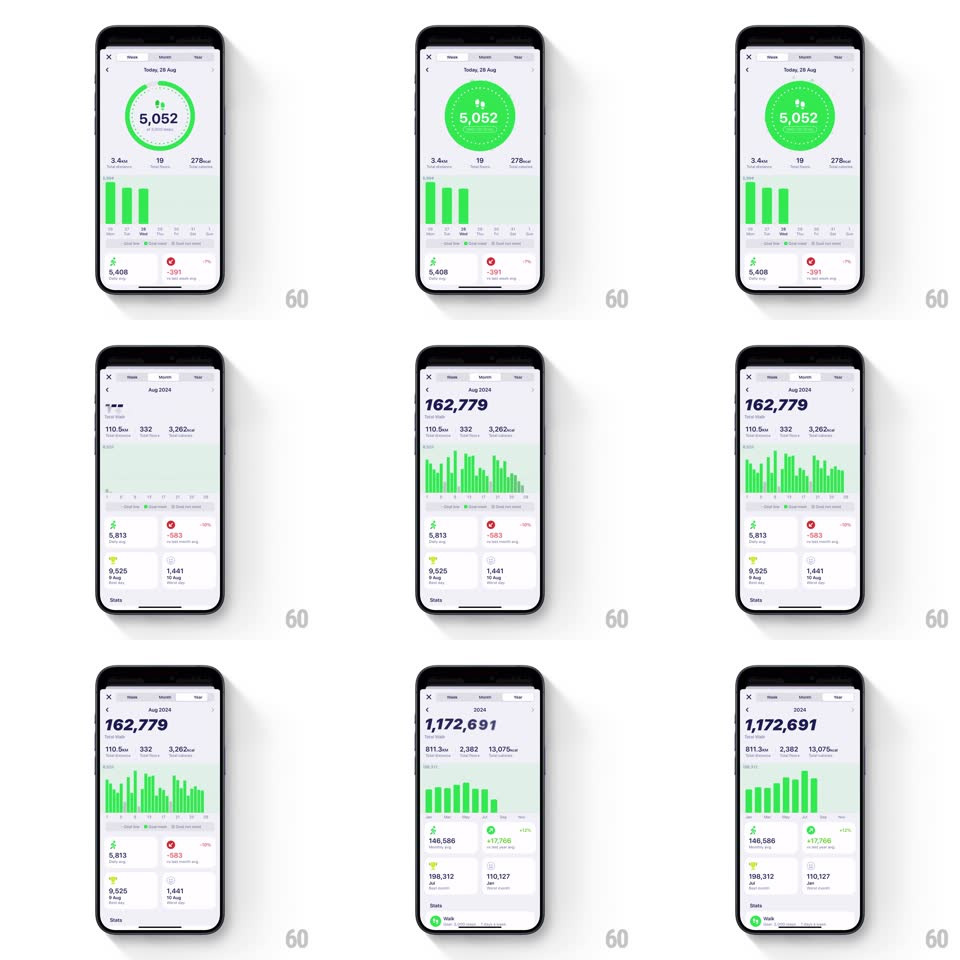

Media
Frame-by-frame

Rebuild this interaction 1:1: GrowPal's stats detail - switching between Day, Month, and Year tabs rebuilds the screen: the step ring fills, then bar charts grow bar-by-bar and the stat cards stagger in below.

Rebuild this interaction 1:1: GrowPal's stats detail - switching between Day, Month, and Year tabs rebuilds the screen: the step ring fills, then bar charts grow bar-by-bar and the stat cards stagger in below. ## Integration Integration: stack-agnostic spec - springs given as stiffness/damping, timed motions as duration + curve; map every value to your framework and animation library of choice. ## Scene Light stats screen: a period header (Today / Aug 2024 / 2024), a big headline number (5,052 / 162,779 / 1,172,691 steps), summary chips (distance, workouts, calories), a green bar chart, then 2x2 stat cards (walk, calories, best day) above a Stats nav row. ## Motion spec Pattern: staged data-viz rebuild per tab. - On tab switch, the old content fades out (150ms); the new period's headline number counts up from 0 to value (~700ms, ease-out) while the circular ring (Day view) sweeps to its fill (800ms, ease-out). - Bar chart: bars grow from the baseline with a left-to-right stagger (each bar 300ms ease-out, 25ms delay between bars); taller months/years use narrower bars but the same per-bar timing. - The stat cards fade up staggered 100ms apart, rising 12px as they land (400ms, ease-out). - The tab indicator pill slides to the new tab (spring ~350/22). ## Calibration - Sequence per tab: number/ring first, bars second, cards last - never simultaneous. - Green is the single accent; everything else is neutral gray. ## Reduced motion Full-screen crossfade; final values shown immediately. ## Don't miss - The bar stagger reads as the chart "building itself" - too fast and it becomes noise. - The count-up and ring sweep finish together even though they start together.